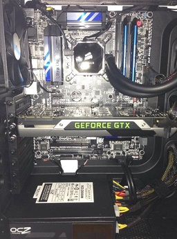
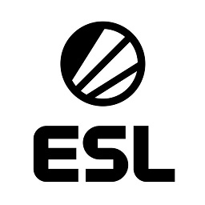
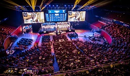
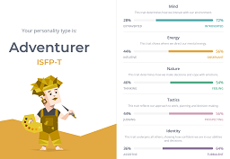
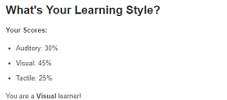
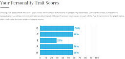

Allan Liem
Student Number: s3807389
Email Address: s3807389@student.rmit.edu.au
Nationality/Culture: Australian with an Indonesian background.
Education: Year 12 at Mount Waverley Secondary College, currently 1st year at RMIT University.
Occupation: Full-time student at RMIT and casual employee at Scorptec Computers.
Languages: Fluent in English and Indonesian, little knowledge of Japanese.
Hobbies: Playing and watching both Football (soccer) and eSports (CS:GO) are my biggest hobbies. Cooking is also a hobby of mine.
My Interest in IT
-
What do I like?
My main interest in IT would have to be the ever-growing mammoth that is eSports. In my opinion, it is an amazing industry that utilises technology to bring people from all over the world together, just like many other sports.
The amount of money invested into the industry by leading organisations and companies is mind-blowing and the fact that anyone from anywhere can be involved is inspiring to me.Current Experience
I’m lucky enough to be an employee at Scorptec (Scorpion Technology Computers). I’ve been working in the warehouse department for almost 2 years now. Being in a workplace environment such as Scorptec’s has also been a great learning environment for me. Working closely with the sales team, I’ve learnt the technological needs of almost all types of people. From general everyday consumers to the most die-hard gamers and even corporate businesses.
-
How did I get into it?
From as young as I could remember, I was surrounded by technology and specifically video games. I had an uncle that had his own console modification business and another with a computer business.
Up until high school I was very much a console gamer and that shifted towards PC gaming as I discovered more and more. My family has been the most important factor in my life regarding my interest in IT.
A friend of mine introduced me to CS:GO in 2013 and ever since then it’s been my main game (almost ruining every other game for me). I’ve invested many hours into playing the game at a decently high level in Australia, but what keeps me interested is the competitive side of the game and watching professionals do their job. -
Why did I choose RMIT?
I chose to undertake my studies at RMIT as I believe this university can provide me the environment and platform to learn and grow as a person. Before I chose RMIT, I read about their connections and involvement in IT, convincing me that this was the right place to study.

During the time that I’m studying here, I hope that I can successfully finish my course and, in the process, learn many things. Knowledge and skills to achieve my career goals is very important, but also growing as a person too, and hopefully I can do that here.First computer I built in 2013.
What's my ideal job?
Unfortunately, I can’t find an advertisement of my ideal job, but I can describe exactly what my dream job (currently) would be.
-
eSports Event Production
Having been an avid supporter of eSports and specifically CS:GO, I’ve attended the past three IEM (Intel Extreme Masters) Sydney events held here in Australia, where top teams and many fans come together for the love of the game.

The love of the game has influenced me into wanting to work in the industry.
Since I’m not skilled enough to be a professional player, a job such as being a member of the event production team who sets up, manages and runs the live game/equipment at an eSports event run by a company such as ESL or DreamHack would be amazing for me. -
What's required?
In order to be a part of that team, I would need to have a deep understanding of how a production team works separately and together to bring such a largescale event to life. Skills such as running a local LAN server and how all the live game audio and video can be broadcasted locally to a crowd as well as being streamed to the world with the highest level of quality would be needed. Finally, an understanding and passion of the game itself.
 -
How can I get there?
Currently, the only thing that I possess is an understanding and passion for the game. I somewhat know how a local LAN would be run, but upscaling it to the size of a major event it beyond my current knowledge. I plan to learn as much as possible here in my time with RMIT. Networking would be one of the first things I would need to understand well, and I should be able to accomplish that soon. Potentially, becoming a backend developer for the streaming platform may be an option I consider too, and RMIT can certainly help me obtaining the skills for that. In the future, instead of attending eSports events as a spectator, I will attempt to attend as a volunteer worker in order to gain as much experience as possible in working in a team that runs an event as such.
Hopefully in a couple of years I will have the skills and experience needed to work at a smaller and local company first, as working for ESL or DreamHack would most likely require relocation.
An Insight into Me
-
Myers-Briggs
Learning Styles
Big Five Personalities
 -
What do these results mean?
The results of these three tests do not come as a surprise to me, as I believe they reflect who I am as a person currently.
With the Myers-Briggs and Big Five Personality tests, they both display that I am not to take initiative, but also not one to hide. I will mostly listen to anyone and anything without any prejudice and take in their opinion to help me or help me help them. The learning styles test states that I am mostly a visual learner, and that is somewhat true in the way that if I were to be shown how to do something, instead of reading about it, I would learn faster. -
How will I use these results?
These results only reassure me that I’m a person that is willing to listen in a team, but also not being one to take initiative of the team. These results won’t influence me in a negative way, as it isn’t something I’m unaware of, instead it should influence me to change for the better in order to help my team.
When forming a team, it would be crucial to have a member (excl. me) that can be a leader. One to take initiative and keep control within the group.
Currently I do not possess the personality and social skills to take this position with a team, but hopefully I can eventually learn to.
An idea of mine!
A dream project of mine is to create an online platform/infrastructure that allows gamers from all over the world to play with each other with an acceptable internet latency. Currently, Australia to the United States can have a latency of about 180-250, an acceptable latency would be under 50. This would most likely require a physical improvement of infrastructure in many countries as well a flawless online platform.
-
Why?
In eSports, the level of skill in European or North American teams can be much higher compared to Oceania/Asia.
This is because players in the former regions can practice against each other frequently and improve at a much higher rate. Players in Oceania and nearby Asian countries for example, have no way to practice against players of higher quality unless they physically move. This often results in predictable results at major LAN tournaments.
The current solution is what I mentioned earlier where they physically move to the location of the tournament beforehand, this is called a bootcamp. There is a huge market not only in eSports, but for gamers in general for a platform that can connect players from one side of the world to the other. -
What do we need?
High speed internet connections would be required in all countries, with help from governments this would be possibly, as having high-speed internet doesn’t just benefit gamers. Not only high speeds, but speeds faster than what’s available currently. This would require new innovative technology to the hardware of networking. Most of the networking software available now is at a very high standard, having little to no delays. This can still be improved into a flawless system where the delays are only in the hardware.
A project like this would require a large and skilled team filled with the world’s best at networking and research. A new physical means of transmitting data at a required speed would need to be created, as well as the supporting infrastructure to support it. -
What do we achieve with this?
If this ambitious project were to be successful, my goal of having gamers from all around the world being able to play with each other enjoyably no matter where they are would be possible.
This would help eSports players and team improve greatly in skill, but most importantly improve the whole eSports industry by providing greater gameplay for the world to see.
The bigger picture in this is providing insanely fast internet speeds between countries, this would also benefit countries economically as business and consumers are able to interact with each other almost instantly.
A huge technological advancement like this will also lead to greater innovations in other aspects of technology.